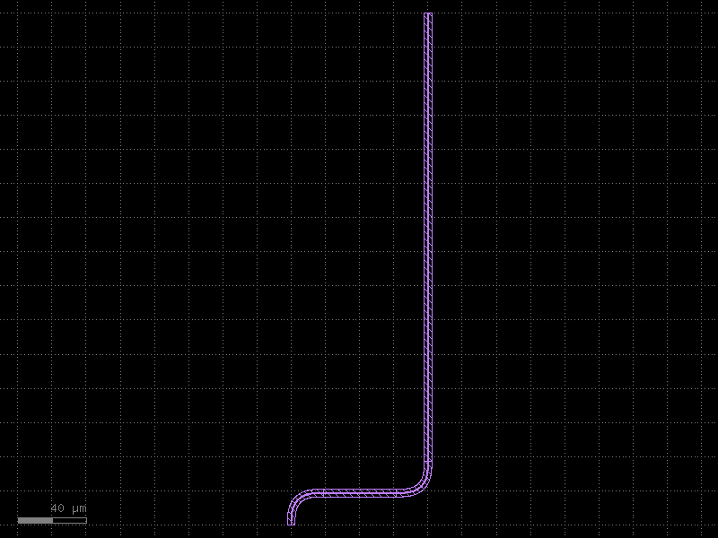
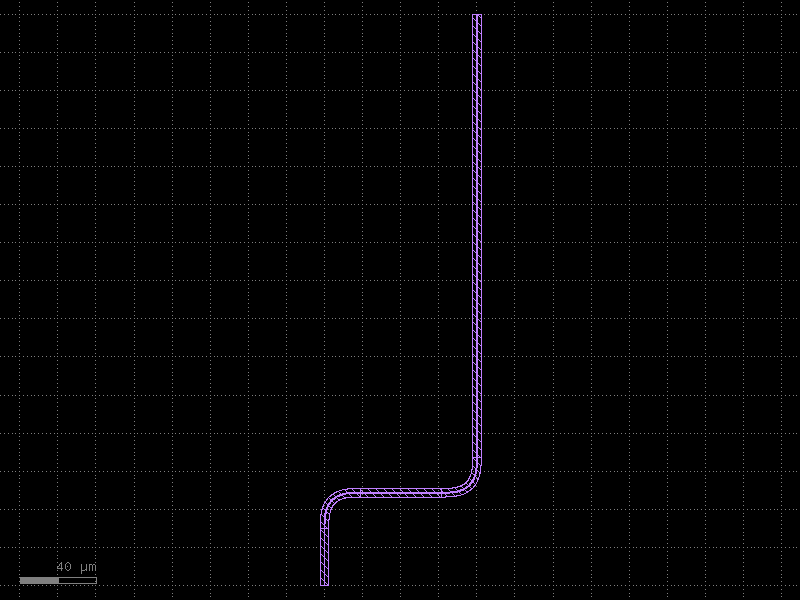
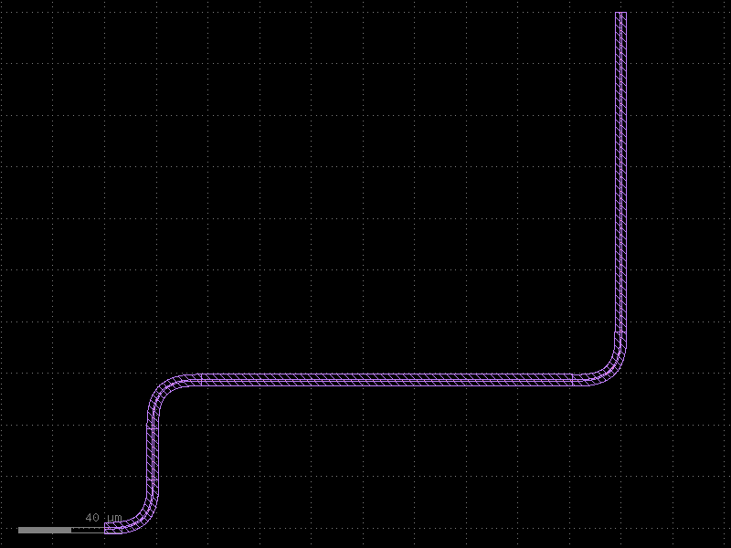
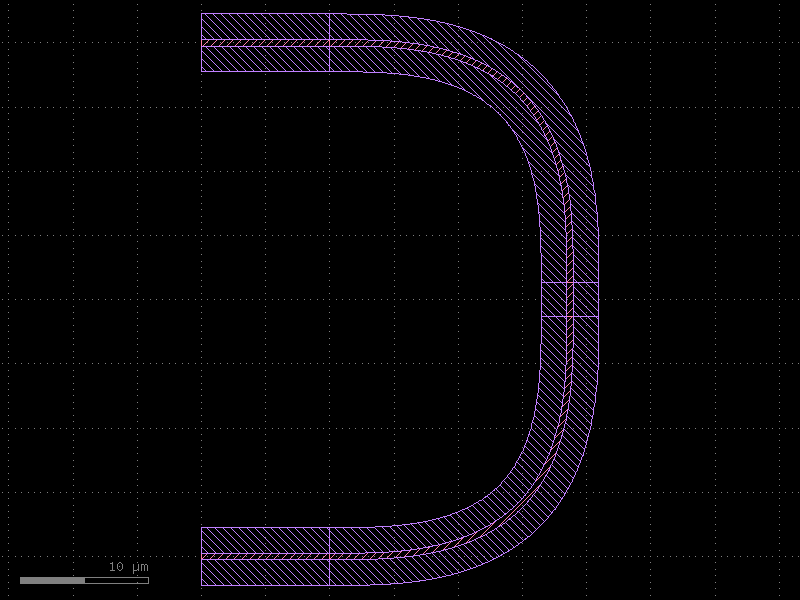
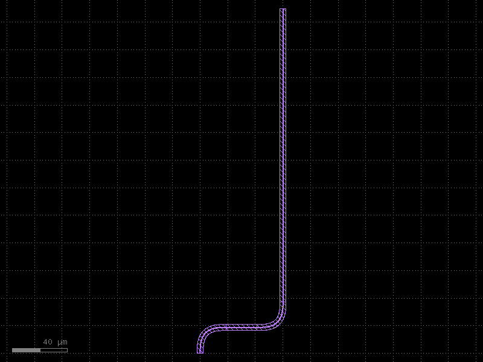

Manhattan Routing Primitives
This page covers the low-level building blocks that power all of kfactory's
manhattan (right-angle) routing. route_bundle wraps these internally — read
this page when you need fine-grained control over backbone paths or want to
understand how routing works under the hood.
| Function | Purpose |
|---|---|
kf.routing.manhattan.route_manhattan |
Calculate a 2-port backbone (list of kdb.Point) |
kf.routing.manhattan.route_manhattan_180 |
Backbone for a U-turn between two co-directional ports |
kf.routing.optical.place_manhattan |
Materialise a backbone into waveguide geometry |
kf.routing.steps.* |
Step objects to control entry / exit behaviour |
What is a backbone?
A backbone is a list of kdb.Point objects (DBU coordinates) that describe the
centreline of a route — the corners where bends will be placed. Separating path
calculation from placement lets you inspect or manipulate the route before
committing geometry to a cell.
Setup
from functools import partial
import kfactory as kf
class LAYER(kf.LayerInfos):
WG: kf.kdb.LayerInfo = kf.kdb.LayerInfo(1, 0)
WGCLAD: kf.kdb.LayerInfo = kf.kdb.LayerInfo(2, 0)
L = LAYER()
kf.kcl.infos = L
# Euler bend: width=0.5 µm, nominal radius=10 µm.
# The actual routing radius is larger than the nominal — always use get_radius().
wg_enc = kf.kcl.get_enclosure(
kf.LayerEnclosure(name="WGSTD", sections=[(L.WGCLAD, 0, 2_000)])
)
bend90 = kf.factories.euler.bend_euler_factory(kcl=kf.kcl)(
width=0.5,
radius=10,
layer=L.WG,
enclosure=wg_enc,
angle=90,
)
straight_factory = partial(
kf.factories.straight.straight_dbu_factory(kcl=kf.kcl),
layer=L.WG,
enclosure=wg_enc,
)
WG_WIDTH = kf.kcl.to_dbu(0.5) # 500 DBU
BEND_RADIUS = kf.routing.optical.get_radius(bend90) # actual footprint radius in DBU
print(f"WG width: {WG_WIDTH} DBU ({WG_WIDTH / 1000:.3f} µm)")
print(f"Bend radius: {BEND_RADIUS} DBU ({BEND_RADIUS / 1000:.3f} µm)")
WG width: 500 DBU (0.500 µm)
Bend radius: 18701 DBU (18.701 µm)
1 · route_manhattan — backbone calculation
route_manhattan(port1, port2, bend90_radius) returns the shortest set of
axis-aligned waypoints connecting two ports. No geometry is created yet.
The bend90_radius must be the actual footprint radius of the bend cell
(use kf.routing.optical.get_radius(bend_cell)). Passing the nominal radius
of an euler bend will produce collisions because the euler footprint is larger.
# Port 1: North-facing at origin
# Port 2: South-facing offset to the right and above
p_start = kf.Port(
name="p1",
trans=kf.kdb.Trans(1, False, 0, 0), # angle=1 → North
width=WG_WIDTH,
layer_info=L.WG,
)
p_end = kf.Port(
name="p2",
trans=kf.kdb.Trans(3, False, kf.kcl.to_dbu(80), kf.kcl.to_dbu(300)), # South
width=WG_WIDTH,
layer_info=L.WG,
)
backbone = kf.routing.manhattan.route_manhattan(p_start, p_end, bend90_radius=BEND_RADIUS)
print("Backbone points (DBU):", backbone)
print("Backbone points (µm): ", [(p.x / 1000, p.y / 1000) for p in backbone])
Backbone points (DBU): [0,0, 0,18701, 80000,18701, 80000,300000]
Backbone points (µm): [(0.0, 0.0), (0.0, 18.701), (80.0, 18.701), (80.0, 300.0)]
2 · place_manhattan — materialise geometry
place_manhattan(c, p1, p2, pts, ...) walks the backbone, inserting bend and
straight cells at each waypoint. The result is placed inside cell c.
c_basic = kf.KCell("manhattan_basic")
kf.routing.optical.place_manhattan(
c_basic,
p_start,
p_end,
backbone,
straight_factory=straight_factory,
bend90_cell=bend90,
)
c_basic

3 · Entry / exit stubs with Steps
Steps let you force a minimum straight section before the router takes its
first bend (start_steps) or after the last bend (end_steps).
Common step types:
| Class | Effect |
|---|---|
Straight(dist=N) |
Go straight for N DBU |
Left() |
Turn left, then continue |
Right() |
Turn right, then continue |
Import from kfactory.routing.steps:
from kfactory.routing.steps import Left, Right, Straight
# Force a 30 µm straight stub at both ends before bending
backbone_stubs = kf.routing.manhattan.route_manhattan(
p_start,
p_end,
bend90_radius=BEND_RADIUS,
start_steps=[Straight(dist=kf.kcl.to_dbu(30))],
end_steps=[Straight(dist=kf.kcl.to_dbu(30))],
)
print("Backbone with 30 µm stubs (µm):", [(p.x / 1000, p.y / 1000) for p in backbone_stubs])
c_stubs = kf.KCell("manhattan_stubs")
kf.routing.optical.place_manhattan(
c_stubs,
p_start,
p_end,
backbone_stubs,
straight_factory=straight_factory,
bend90_cell=bend90,
)
c_stubs
Backbone with 30 µm stubs (µm): [(0.0, 0.0), (0.0, 48.701), (80.0, 48.701), (80.0, 300.0)]

Forcing a left turn exit before bending:
# Start facing East, then force an immediate left (North) exit stub before routing
p_east = kf.Port(
name="east_start",
trans=kf.kdb.Trans(0, False, 0, 0), # angle=0 → East
width=WG_WIDTH,
layer_info=L.WG,
)
p_north_end = kf.Port(
name="north_end",
trans=kf.kdb.Trans(3, False, kf.kcl.to_dbu(200), kf.kcl.to_dbu(200)),
width=WG_WIDTH,
layer_info=L.WG,
)
backbone_left = kf.routing.manhattan.route_manhattan(
p_east,
p_north_end,
bend90_radius=BEND_RADIUS,
start_steps=[Left(), Straight(dist=kf.kcl.to_dbu(20))],
)
c_left = kf.KCell("manhattan_left_exit")
kf.routing.optical.place_manhattan(
c_left,
p_east,
p_north_end,
backbone_left,
straight_factory=straight_factory,
bend90_cell=bend90,
)
c_left

4 · route_manhattan_180 — U-turn routing
When two ports face the same direction with one behind the other, a normal
manhattan route needs a 180° U-turn. route_manhattan_180 calculates this
backbone efficiently by using a tighter bend180_radius (half the leg spacing).
Parameters (all in DBU):
bend90_radius— footprint radius for 90° bends (useget_radius)bend180_radius— half the gap between the two parallel U-turn legsstart_straight/end_straight— minimum entry / exit straight lengths
# Two East-facing ports on the same horizontal axis — standard U-turn scenario
p_a = kf.Port(
name="a",
trans=kf.kdb.Trans(0, False, 0, 0), # East at origin
width=WG_WIDTH,
layer_info=L.WG,
)
p_b = kf.Port(
name="b",
trans=kf.kdb.Trans(0, False, 0, kf.kcl.to_dbu(40)), # East, 40 µm above
width=WG_WIDTH,
layer_info=L.WG,
)
backbone_180 = kf.routing.manhattan.route_manhattan_180(
p_a,
p_b,
bend90_radius=BEND_RADIUS,
bend180_radius=kf.kcl.to_dbu(40), # gap between legs
start_straight=kf.kcl.to_dbu(10),
end_straight=kf.kcl.to_dbu(10),
)
print("U-turn backbone (µm):", [(p.x / 1000, p.y / 1000) for p in backbone_180])
c_180 = kf.KCell("manhattan_180_uturn")
kf.routing.optical.place_manhattan(
c_180,
p_a,
p_b,
backbone_180,
straight_factory=straight_factory,
bend90_cell=bend90,
)
c_180
U-turn backbone (µm): [(10.0, 0.0), (28.701, 0.0), (28.701, 40.0), (0.0, 40.0)]

5 · Inspecting ManhattanRoute
place_manhattan returns a ManhattanRoute object. You can query it for
inserted instances and length information.
c_info = kf.KCell("manhattan_info")
p1_info = kf.Port(
name="o1",
trans=kf.kdb.Trans(1, False, 0, 0),
width=WG_WIDTH,
layer_info=L.WG,
)
p2_info = kf.Port(
name="o2",
trans=kf.kdb.Trans(3, False, kf.kcl.to_dbu(60), kf.kcl.to_dbu(250)),
width=WG_WIDTH,
layer_info=L.WG,
)
pts_info = kf.routing.manhattan.route_manhattan(p1_info, p2_info, bend90_radius=BEND_RADIUS)
route = kf.routing.optical.place_manhattan(
c_info,
p1_info,
p2_info,
pts_info,
straight_factory=straight_factory,
bend90_cell=bend90,
)
print(f"Route length: {route.length / 1000:.2f} µm")
print(f"Num instances: {len(route.instances)}")
c_info
Route length: 298.03 µm
Num instances: 4

Key pitfalls
| Pitfall | Fix |
|---|---|
Passing nominal bend radius to route_manhattan |
Use kf.routing.optical.get_radius(bend_cell) — euler bends extend beyond their nominal radius |
place_manhattan raises "distance too small" |
The backbone segments are shorter than the bend footprint; increase port separation or use a smaller bend |
Steps with dist smaller than bend90_radius |
The step must be at least as large as the bend radius; Straight(dist=...) will raise a ValueError if violated |
| Forgetting that all coordinates are DBU | Multiply µm values by 1000 (or use kf.kcl.to_dbu(x_µm)) |
See Also
| Topic | Where |
|---|---|
High-level optical routing (route_bundle, loopbacks) |
Routing: Optical |
| Bundle routing built on top of manhattan | Routing: Bundle |
| Euler bend cells and effective radius | Components: Euler Bends |
| Port direction conventions (angle 0/1/2/3) | Core Concepts: Ports |
| DBU vs µm coordinate systems | Core Concepts: DBU vs µm |